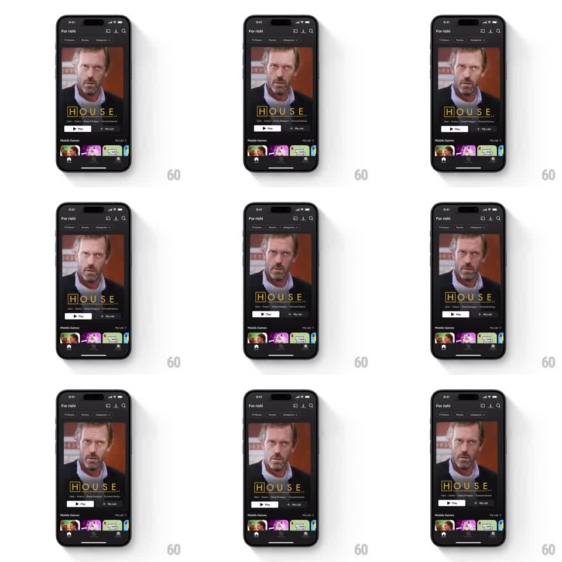

Media
Frame-by-frame

Rebuild this interaction 1:1: Netflix's gyroscope featured card - tilting the device shifts the featured title's background keyart with a subtle parallax while all UI chrome stays fixed.

Rebuild this interaction 1:1: Netflix's gyroscope featured card - tilting the device shifts the featured title's background keyart with a subtle parallax while all UI chrome stays fixed.
## Integration
Integration: stack-agnostic spec - springs given as stiffness/damping, timed motions as duration + curve; map every value to your framework and animation library of choice.
## Scene
The Netflix home feed ("For rishi"): a large featured card (HOUSE keyart with title treatment, Play and My List buttons) dominates the upper screen, rails below. The card's background image is oversized - tilting the phone pans within it.
## Motion spec
Pattern: gyro parallax on featured keyart.
- Gyroscope input maps to background translation: roll to translateX, pitch to translateY, range about +-20px, smoothed with a soft spring (stiffness ~140, damping ~18) so motion feels weighted, never jittery.
- The keyart is rendered ~8% larger than the card so panning never exposes edges.
- Only the background layer moves: title treatment, buttons, and gradients are pinned to the card frame.
- A barely-there highlight shift accompanies the pan (gradient sheen moves ~10px with tilt) to give the art a lit, physical quality.
- Returning the device to neutral eases the art back to center (spring settle, ~400ms).
## Calibration
- Subtlety is the spec: if the pan is obvious at a glance, halve the range. It should be felt on a second look.
- The spring must fully absorb sensor noise; no constant micro-motion at rest.
## Reduced motion
Static keyart.
## Don't miss
- The title and buttons never move - moving chrome with the art destroys the depth illusion.
- The dark scrim gradient at the card's bottom is part of the chrome, not the art; it stays pinned.